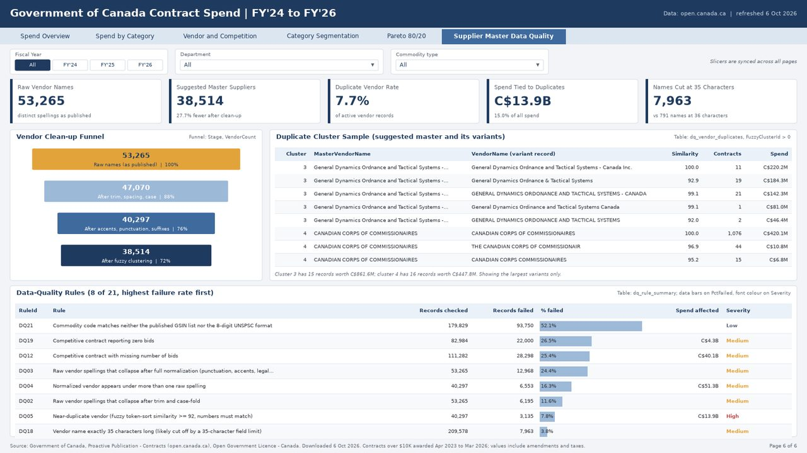
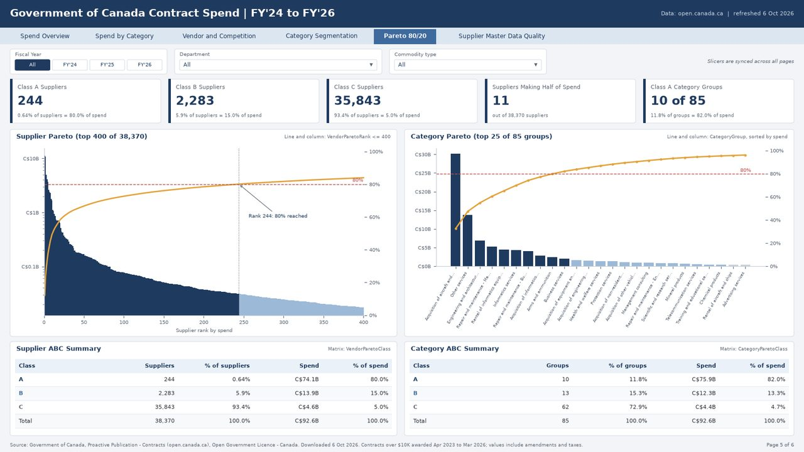
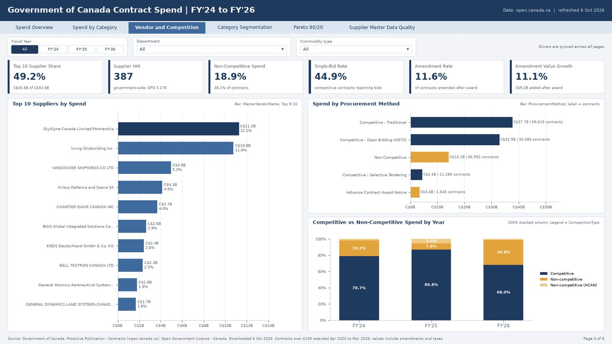
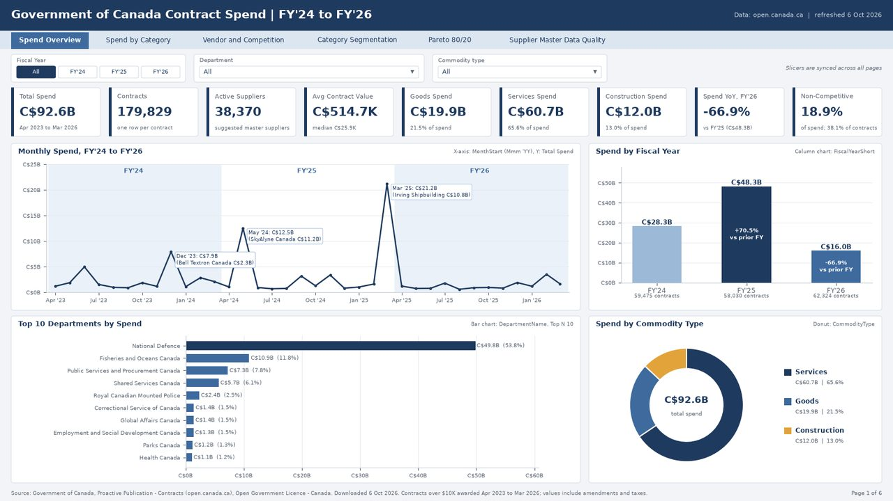
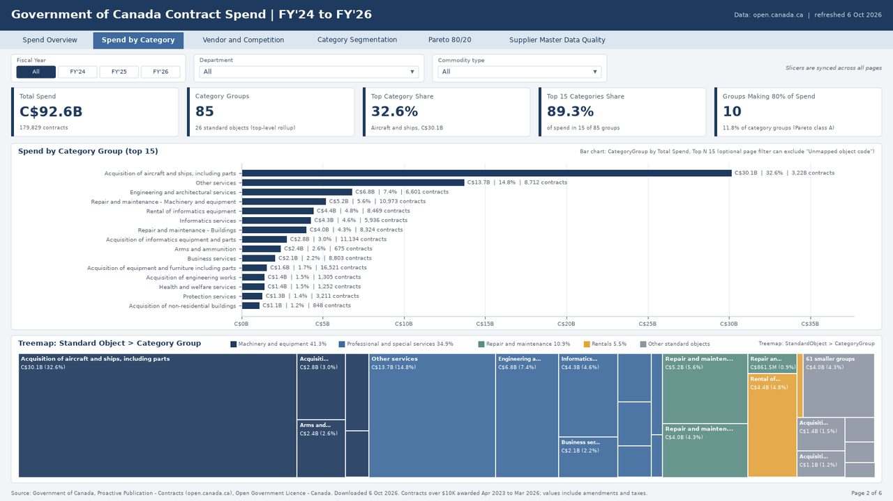
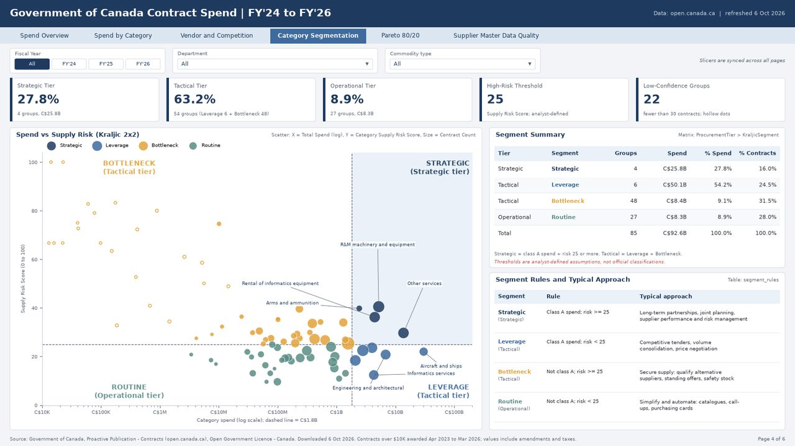

53,265 → 38,514
raw vendor names after clean-up and fuzzy matching. That is 27.7% fewer suppliers to report on.
At Lafarge Africa I ran the supplier master file in 2017, then served as SAP master data lead (MDM SPOC) from 2018 to 2021. At IHS Towers I represented Procurement as SAP S/4HANA Discovery lead. This project puts that question to 179,829 Government of Canada contracts.
Departments typed the vendor names. I cleaned them into suggested masters, measured the duplicates against spend, and designed a six-page report for Power BI and Tableau around that.
Status: mockups built from the real data. Power BI and Tableau builds in progress.
Six pages, one design for both tools. Data quality and supplier concentration come first, because they answer the question. Click a page to open it full size.






Numbers that answer the question first. Spend mix comes after.
53,265 → 38,514
raw vendor names after clean-up and fuzzy matching. That is 27.7% fewer suppliers to report on.
C$13.9B
of spend sits with 3,135 vendor names that look like near-duplicates, in 1,352 clusters. That is 15% of all spend.
61 of 244
class A suppliers (the ones that make up 80% of spend) have likely duplicate records. That is where I would start the clean-up.
7,963
records have a vendor name of exactly 35 characters, against 791 at 36. Names look cut off. SAP's vendor name field (NAME1) is also 35 characters, though that does not mean the government uses SAP.
49.2%
of spend sits with the top 10 suppliers. Supplier HHI is 387 government-wide, so concentration is high even before duplicates.
11
suppliers make up half of the C$92.6B. Spend is far more concentrated than a classic 80/20.
32.6%
of spend went to aircraft and ships, from 1.8% of contracts. Category mix matters once the supplier file is clean.
Clean-up and golden records first. Model and DAX after that.
I standardized vendor names (case, accents, punctuation, Inc. and Ltd.), then matched near-duplicates with rapidfuzz at 92% similarity. Different numbers never match.
Each fuzzy cluster gets one suggested master: the spelling with the most spend. A VendorNameMap links every raw spelling to that master.
21 checks on names, postal and country codes, bids, values, dates and category codes. Each one carries failed records and the spend involved, so the cost of bad data is visible.
Proactive Publication - Contracts from open.canada.ca. Contracts awarded April 2023 to March 2026, one row each at the latest value. Standing offer and supply arrangement records left out. Category labels from the Chart of Accounts 2025-26.
I scored the 85 category groups for supply risk and crossed that with Pareto spend class. My thresholds, not an official classification. 22 groups with under 30 contracts are flagged low confidence.
Non-Competitive Spend % =
DIVIDE (
CALCULATE ( [Total Spend],
DimProcurementMethod[IsCompetitive] = 0 ),
[Total Spend]
)Category Pareto Class =
VAR Cum = [Category Cumulative Spend %]
VAR Share =
DIVIDE ( [Total Spend],
CALCULATE ( [Total Spend],
ALLSELECTED ( DimCategorySegment[CategoryGroup] ) ) )
VAR Before = Cum - Share
RETURN
SWITCH ( TRUE (), Before < 0.80, "A", Before < 0.95, "B", "C" )One fact row per contract and seven dimensions. DimVendor holds the master name and DQ flags; VendorNameMap sits beside it.